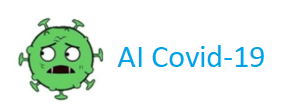

Home
Info
Map
Protect
Game Quiz
Donate
THÔNG TIN NHANH TRÊN THẾ GIỚI
BỘ Y TẾ và WHO KHUYẾN CÃO: Bảo vệ bản thân, phòng bệnh Viêm phổi cấp do chủng mới của virus corona nCoV 2019
HÃY LUÔN GIỮ SỨC KHá»E CỦA BẠN KHI ĐI LẠI, DU LỊCH!!!
1. Nếu bạn có triệu chứng sốt, ho hoặc khó thở
👉Tránh đi lại, du lịch nếu bạn đang có các triệu chứng sốt, ho hoặc khó thở
👉 Đến ngay cơ sở y tế khi có các triệu chứng kể trên
👉Chia sẻ lịch trình di chuyển của bạn với nhân viên y tế.
2. Một số lưu ý để phòng, chống lây nhiễm nCoV
👉👉Tránh tiếp xúc quá gần với người bị sốt hay bị ho
🙏Rá»a sạch tay thường xuyên với xà phòng và nước sạch; hoặc các loại nước rá»a tay có chứa cồn
🙏Tránh chạm tay và o mắt, mũi hay miệng
3. SỠdụng khẩu trang đúng cách
👉👉👉Khi ho hay hắt hơi, hãy che kÃn miệng và mũi bằng khăn giấy hoặc tay áo. Sau khi sá» dụng khăn giấy, cuá»™n tròn khăn giấy và vứt khăn giấy và o thùng rác. Rá»a sạch tay ngay láºp tức.
😷😷 Khi sá» dụng khẩu trang, hãy chắc chắn rằng khẩu trang che kÃn miệng và mũi – và tránh chạm và o khẩu trang khi Ä‘ang sá» dụng.
😷😷Nếu sá» dụng các loại khẩu trang dùng 1 lần, sau khi sá» dụng cần loại bá» ngay láºp tức và o thùng rác và rá»a sạch tay sau khi bá» khẩu trang.
4. Chủ động tìm đến cơ sở y tế nếu bạn bị ốm
👉👉👉Nếu cảm thấy có dấu hiệu ốm khi Ä‘i lại, du lịch, HÃY thông báo ngay cho nhân viên hà ng không, đường sắt hoặc ô tô và tìm đến chăm sóc y tế cà ng sớm cà ng tốt
👉👉👉Hãy chia sẻ lịch trình di chuyển của bạn với nhân viên y tế
5. Lưu ý quan trá»ng để phòng, chống lây nhiễm nCoV
👉👉Chỉ sá» dụng các loại thá»±c phẩm được nấu chÃn và đảm bảo an toà n thá»±c phẩm
👉👉Không khạc nhổ bừa bãi nơi công cộng
👉👉Tránh tiếp xúc quá gần với các loại Ä‘á»™ng váºt nuôi hoặc hoang dã, dù là động váºt sống, bị ốm hay đã chết.
Nguồn thông tin từ:
http://vncdc.gov.vn/vi/phong-chong-dich-benh-viem-phoi-cap-ncov/8605/bo-y-te-va-who-khuyen-cao-bao-ve-ban-than-phong-benh-viem-phoi-cap-do-chung-moi-cua-virus-corona-ncov-2019

.jpg)